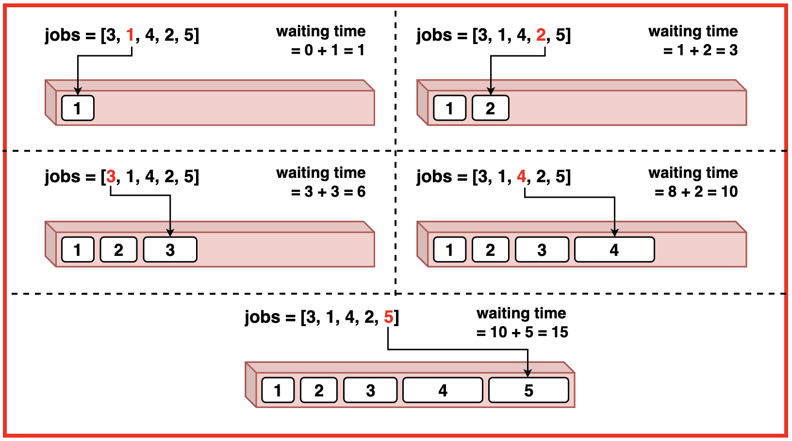
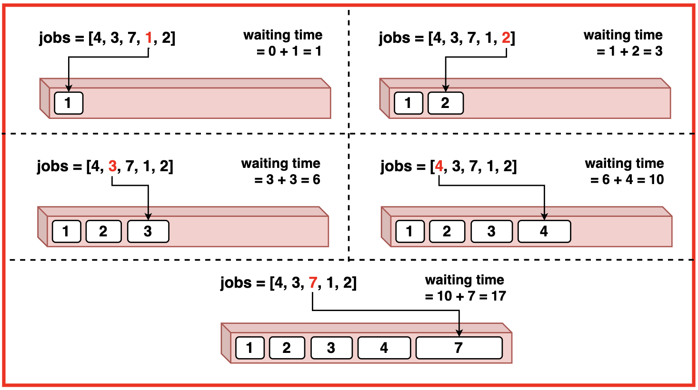

Problem Statement: Given a list of job durations representing the time it takes to complete each job. Implement the Shortest Job First algorithm to find the average waiting time for these jobs.
Examples
Example 1:Input:jobs = [3, 1, 4, 2, 5]
Output: 4Explanation:
The first job that will be executed is of duration 1 and the waiting time for it will be 0.
After the first job, the next shortest job with a duration of 2 will be executed with a waiting time of 1.
Following the completion of the first two jobs, the next shortest job with a duration of 3 will be executed with a waiting time of 3 (1 + 2).
Then, the job with a duration of 4 will be executed with a waiting time of 6 (1 + 2 + 3).
Finally, the job with the longest duration of 5 will be executed with a waiting time of 10 (1 + 2 + 3 + 4).
Hence, the average waiting time is calculated as (0 + 1 + 3 + 6 + 10) / 5 = 20 / 5 = 4.Example 2:Input: jobs = [4, 3, 7, 1, 2]
Output: 4Explanation: The first job that will be executed is of duration 1, and the waiting time for it will be 0.
After the first job, the next shortest job with a duration of 2 will be executed with a waiting time of 1.
Following the completion of the first two jobs, the next shortest job with a duration of 3 will be executed with a waiting time of 3 (1 + 2).
Then, the job with a duration of 4 will be executed with a waiting time of 6 (1 + 2 + 3).
Finally, the job with the longest duration of 7 will be executed with a waiting time of 10 (1 + 2 + 3 + 4).
Hence, the average waiting time is calculated as (0 + 1 + 3 + 6 + 10) / 5 = 20 / 5 = 4.
Disclaimer: Don’t jump directly to the solution, try it out
yourself first.
Optimal Approach
Algorithm / Intuition
We implement the Shortest Job Duration First algorithm using the Greedy technique by selecting the shortest job from the array. To always select the shortest job first we sort the job duration array in ascending order based on their duration.
Once the jobs are sorted, we iterate through each job in the sorted list. For each iteration the waiting time is the sum of the total time taken by all previous jobs. We calculate the waiting time for each job and update the total time taken by adding the duration of the current job to the total waiting time.
Finally, we compute the average waiting time by dividing the total waiting time by the number of jobs.
Algorithm:
Step 1:Sort the jobs in ascending order based on their durations. The jobs array will now contain the job durations arranged from shortest to longest.
Step 2: Initialise variables waitTime to 0 (waiting time for that particular job) and totalTime (total waiting time for all jobs).
Step 3:
Iterate through each job in the sorted array. For each job, its waiting time is the sum of total time taken by all previous jobs. Update the total time taken by adding the duration of the current job to the total waiting time.
Step 4: After iterating through each job in the array, the average waiting is total waiting time divided by the number of jobs ie. length of the jobs array.After iterating through each job in the array, the average waiting is total waiting time divided by the number of jobs ie. length of the jobs array.
Code
#include <vector>
#include <algorithm>
#include <iostream>
using namespace std;
// Function to calculate average
// waiting time using Shortest
// Job First algorithm
float shortestJobFirst(vector<int> jobs) {
// Sort the jobs in ascending order
sort(jobs.begin(), jobs.end());
// Initialize total waiting time
float waitTime = 0;
// Initialize total time taken
int totalTime = 0;
// Get the number of jobs
int n = jobs.size();
// Iterate through each job
// to calculate waiting time
for(int i = 0; i < n; ++i) {
// Add current total
// time to waiting time
waitTime += totalTime;
// Add current job's
// time to total time
totalTime += jobs[i];
}
// Return the average waiting time
return waitTime / n;
}
int main() {
vector<int> jobs = {4, 3, 7, 1, 2};
cout << "Array Representing Job Durations: ";
for(int i = 0; i < jobs.size(); i++){
cout << jobs[i] << " ";
}
cout << endl;
float ans = shortestJobFirst(jobs);
cout << "Average waiting time: "<< ans;
cout << endl;
return 0;
}
import java.util.Arrays;
public class Main {
// Function to calculate average
// waiting time using Shortest
// Job First algorithm
static float shortestJobFirst(int[] jobs) {
// Sort the jobs in ascending order
Arrays.sort(jobs);
// Initialize total waiting time
float waitTime = 0;
// Initialize total time taken
int totalTime = 0;
// Get the number of jobs
int n = jobs.length;
// Iterate through each job
// to calculate waiting time
for (int i = 0; i < n; ++i) {
// Add current total
// time to waiting time
waitTime += totalTime;
// Add current job's
// time to total time
totalTime += jobs[i];
}
// Return the average waiting time
return waitTime / n;
}
public static void main(String[] args) {
int[] jobs = {4, 3, 7, 1, 2};
System.out.print("Array Representing Job Durations: ");
for (int i = 0; i < jobs.length; i++) {
System.out.print(jobs[i] + " ");
}
System.out.println();
float ans = shortestJobFirst(jobs);
System.out.println("Average waiting time: " + ans);
}
}
# Function to calculate average
# waiting time using Shortest
# Job First algorithm
def shortest_job_first(jobs):
# Sort the jobs in ascending order
jobs.sort()
# Initialize total waiting time
wait_time = 0
# Initialize total time taken
total_time = 0
# Get the number of jobs
n = len(jobs)
# Iterate through each job
# to calculate waiting time
for i in range(n):
# Add current total
# time to waiting time
wait_time += total_time
# Add current job's
# time to total time
total_time += jobs[i]
# Return the average waiting time
return wait_time / n
if __name__ == "__main__":
jobs = [4, 3, 7, 1, 2]
print("Array Representing Job Durations:", end=" ")
for job in jobs:
print(job, end=" ")
print()
ans = shortest_job_first(jobs)
print("Average waiting time:", ans)
// Function to calculate average
// waiting time using Shortest
// Job First algorithm
function shortestJobFirst(jobs) {
// Sort the jobs in ascending order
jobs.sort((a, b) => a - b);
// Initialize total waiting time
let waitTime = 0;
// Initialize total time taken
let totalTime = 0;
// Get the number of jobs
const n = jobs.length;
// Iterate through each job
// to calculate waiting time
for (let i = 0; i < n; ++i) {
// Add current total
// time to waiting time
waitTime += totalTime;
// Add current job's
// time to total time
totalTime += jobs[i];
}
// Return the average waiting time
return waitTime / n;
}
const jobs = [4, 3, 7, 1, 2];
console.log("Array Representing Job Durations:", jobs.join(" "));
const ans = shortestJobFirst(jobs);
console.log("Average waiting time:", ans);
Time Complexity: O(N logN + N)
where N is the length of the jobs array. We sort the jobs array giving complexity O(N log N) and to calculate the waiting time we iterate through the sorted array taking O(N) complexity.
Space Complexity: O(1) as the algorithm uses only a constant amount of extra space regardless of the size of the input array. It does not require any additional data structures that scale with the input size.
Video Explanation
Special thanks to Gauri Tomar for contributing to this article on takeUforward. If you also wish to share your knowledge with the takeUforward fam, please check out this article